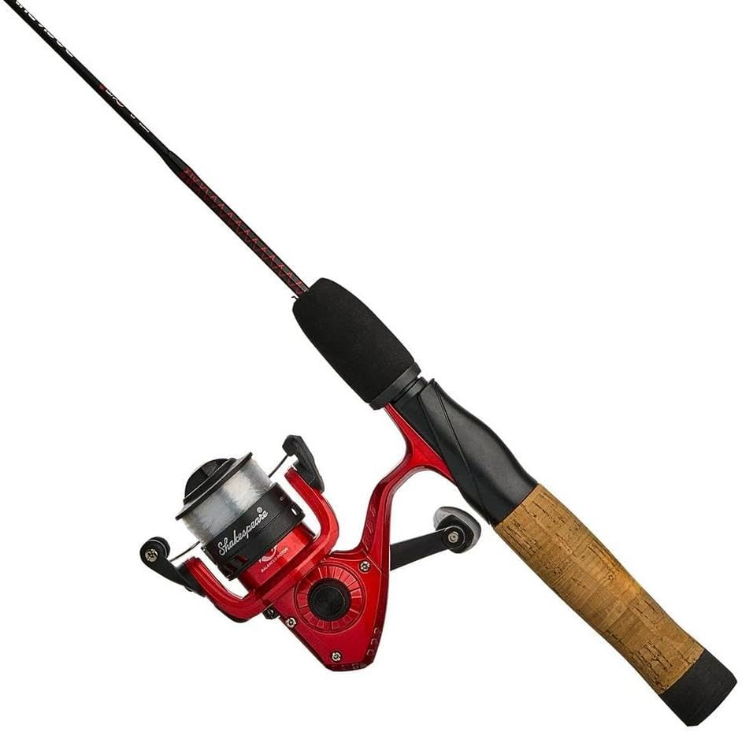
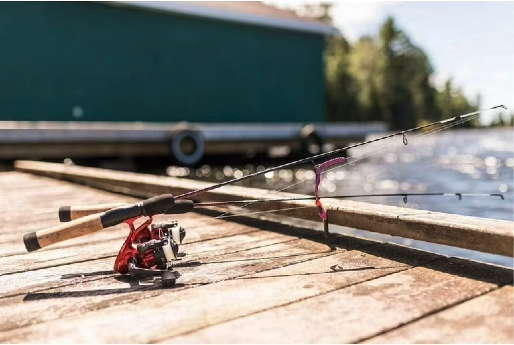

Ugly Stik Dock Runner Spinning Combo

(Academy Sports + Outdoors, n.d.)
Ugly Stik is a known brand with reliable rods. The Ugly Stik Dock Runner Spinning Combo comes with a pre-spooled reel and 6 lbs of fishing line. The combo is made from a combination of graphite and fiberglass. It's not the most lightweight option but it is durable.

(Walmart, n.d.)
This combo is not a push-button, so anglers will have to flip the bail open to release the line to cast and flip it back to close. The handle is comfortable enough to hold for long hours, just in case there isn't any beginner's luck from anyone. It also comes with a 7-year warranty for any unfortunate breaks. This combo typically goes for around $20-$30!
References:
- Fox News. (2025, July 31). The angler’s guide to the best fishing rods. https://www.foxnews.com/deals/anglers-guide-top-fishing-rods
- Walmart. (n.d.). Ugly Stik Dock Runner fishing rod and reel spinning combo. https://www.walmart.com/ip/266686445
- Academy Sports + Outdoors. (n.d.). Ugly Stik Dock Runner spin combo rod and reel. https://www.academy.com/p/ugly-stik-dock-runner-spin-combo-rod-and-reel